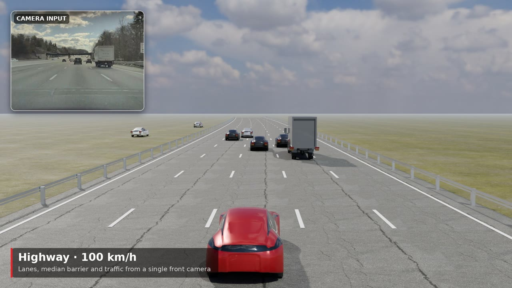

Master's Student at WPI | Specializing in RL, Generative AI & Sensor Fusion
Rebuilds a Tesla-style driving visualisation from raw dashcam video. Detected vehicles, pedestrians, lanes and traffic lights are lifted into 3D, smoothed into tracks and rendered in Blender with per-vehicle state (brake lights, indicators, parked cars), camera-sampled car colours, ego speed from visual odometry and per-scene lighting (day, overcast, rain, night).
Long-horizon object rearrangement in Habitat 2.0 (ReplicaCAD): learned navigate, pick and place skills chained to carry an object across the apartment.
PPO skill policies trained from depth and proprioception: navigate, pick, navigate, place, shown individually and composed into the full fetch task.
Currently a Master's student in Robotics at Worcester Polytechnic Institute (WPI). Researcher at PEAR Lab working on perception for high-speed drones. Previously an ML Engineer at Quantiphi.
Graduate research at PEAR Lab (Prof. Nitin Sanket, WPI) on perception and control for high-speed autonomous drone flight. Details will be shared after publication.
Built a full drone autonomy stack: IMU-based attitude estimation (complementary filter, Madgwick, UKF), trajectory generation, path planning, and Gaussian Splatting-based environment rendering for P2b. Contributed UKF sigma-point and Kalman update implementation.
Hierarchical reinforcement learning for long-horizon mobile manipulation tasks in Habitat 2.0. Agent follows natural language commands to complete multi-step pick-and-place tasks in simulated indoor environments.
Combined ideas from Consistency Models and Align Your Steps (AYS) to improve the sampling schedule of consistency models. Experiments on MNIST demonstrating faster convergence and improved sample quality with AYS-guided schedules.
Panorama stitching pipeline: traditional approach (Harris corners, ANMS, RANSAC homography) and a deep learning approach (supervised + unsupervised homography estimation).
Classical SfM pipeline: feature matching, fundamental/essential matrix, triangulation, PnP RANSAC, and bundle adjustment. Phase 2: deep NeRF for novel view synthesis.

ReelDashcam video → 3D driving scene: detection, depth and tracking lifted into a Blender reconstruction with vehicle states and per-scene lighting. Watch the reel ↑
Classical VIO pipeline (feature tracking + IMU preintegration) and deep VIO for ego-motion estimation. Implements both model-based and learning-based approaches.